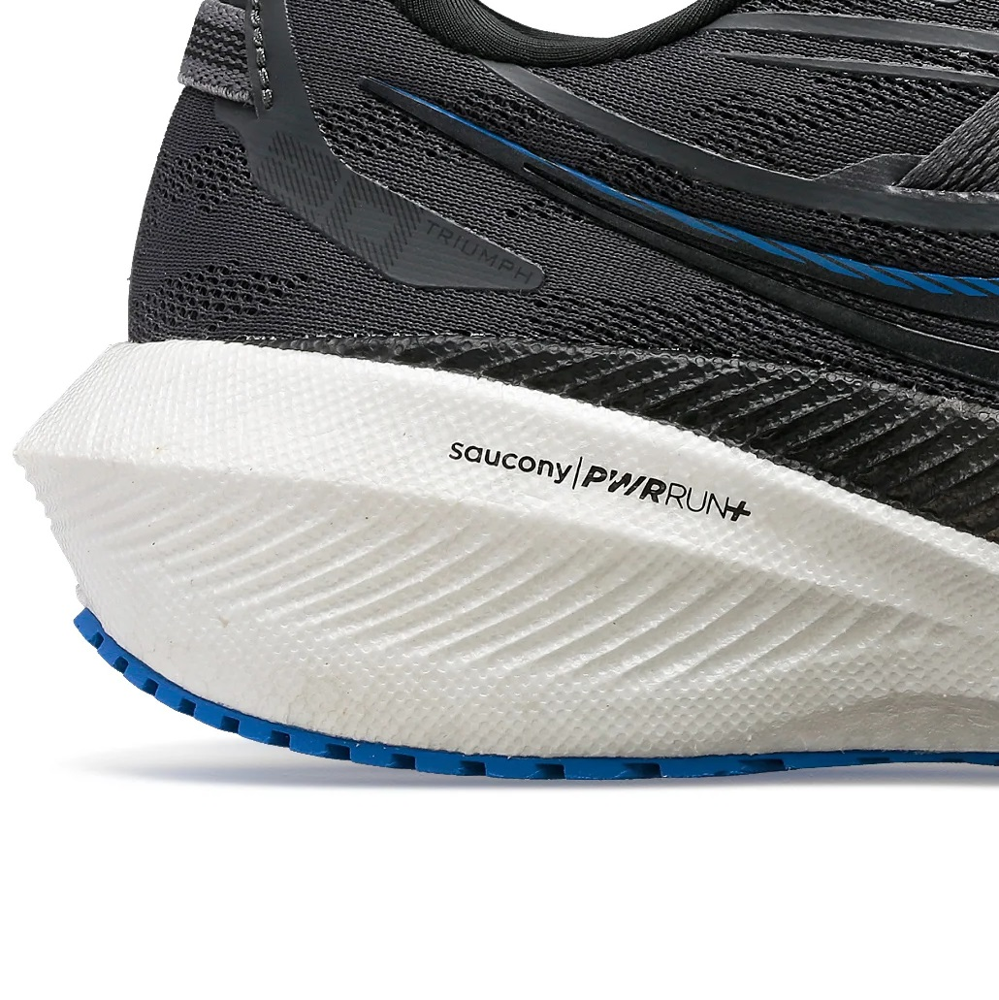
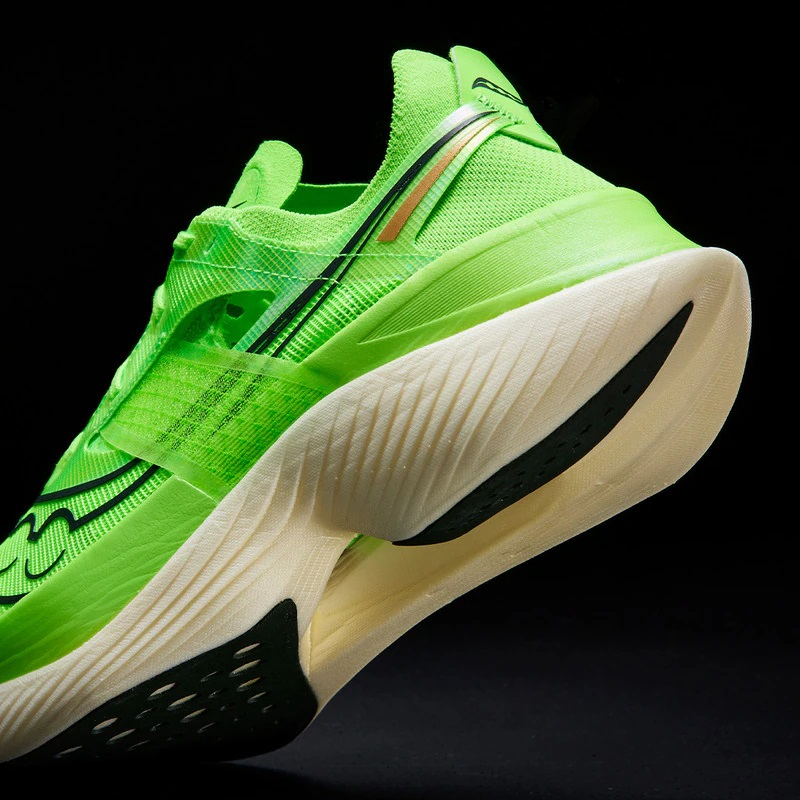
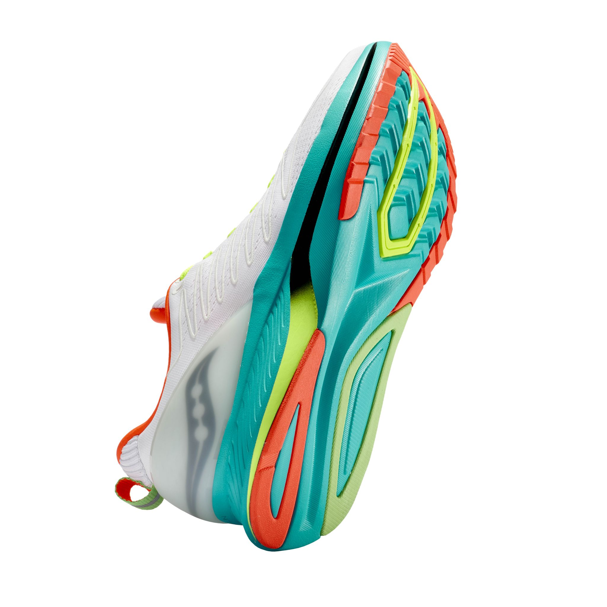

PWRRUN+
Es una espuma de TPU flexible y duradera que ofrece una mayor adaptabilidad y protección. Aporta una amortiguación más suave y ligera en la pisada y una sensación de impulso fluída.
PWRRUN HG
Es una espuma de alta densidad que ofrece una mayor respuesta. La variante HG indica que también es amortiguada, pero con un rebote, una capacidad de retorno de energía, todavía mayor. Esta tecnología se utiliza en las zapatillas más rápidas y avanzadas de Saucony.
Speedroll
Es un diseño de la suela que favorece una transición rápida y fluida en cada zancada. Esta tecnología se combina con las diferentes espumas PWRRUN para ofrecer una mayor eficiencia y dinamismo en la carrera.
PWRTRAC
Es un compuesto de caucho que ofrece una mayor tracción y durabilidad en la suela de las zapatillas. Esta tecnología se adapta a diferentes tipos de terreno y superficie, ofreciendo un agarre seguro y confiable.
XT-900
Es un compuesto de caucho de carbono que ofrece una mayor tracción y durabilidad en múltiples superficies, se caracteriza por su resistencia al desgaste y su agarre seguro, lo que ayuda a mejorar el rendimiento y la protección de los corredores.